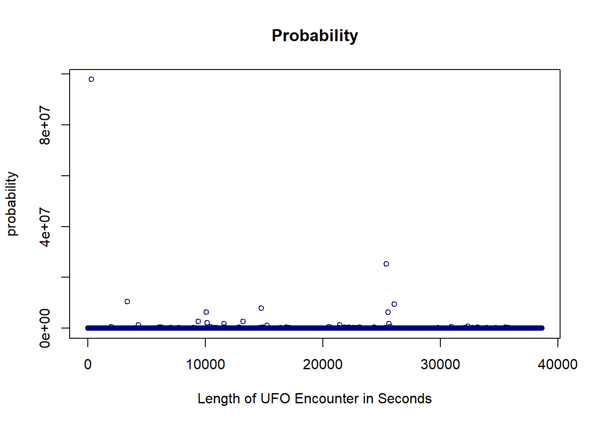
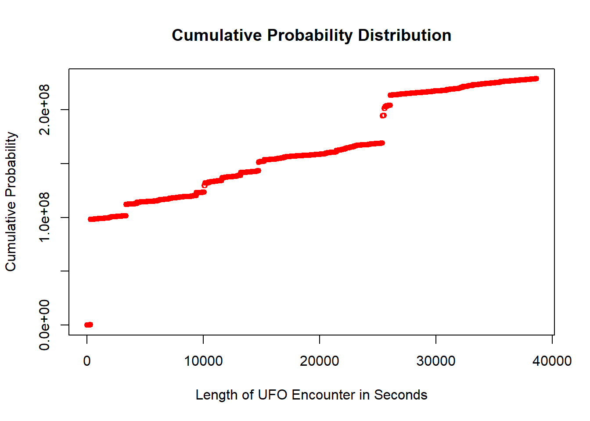
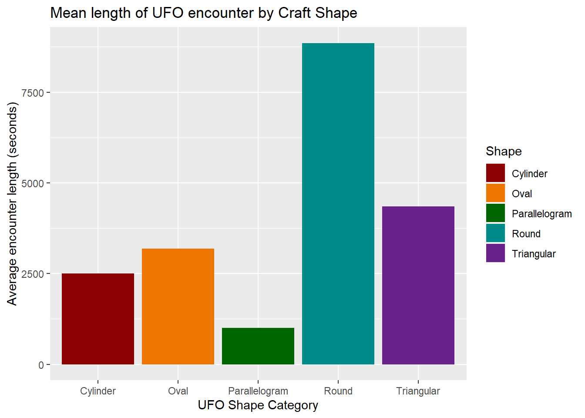
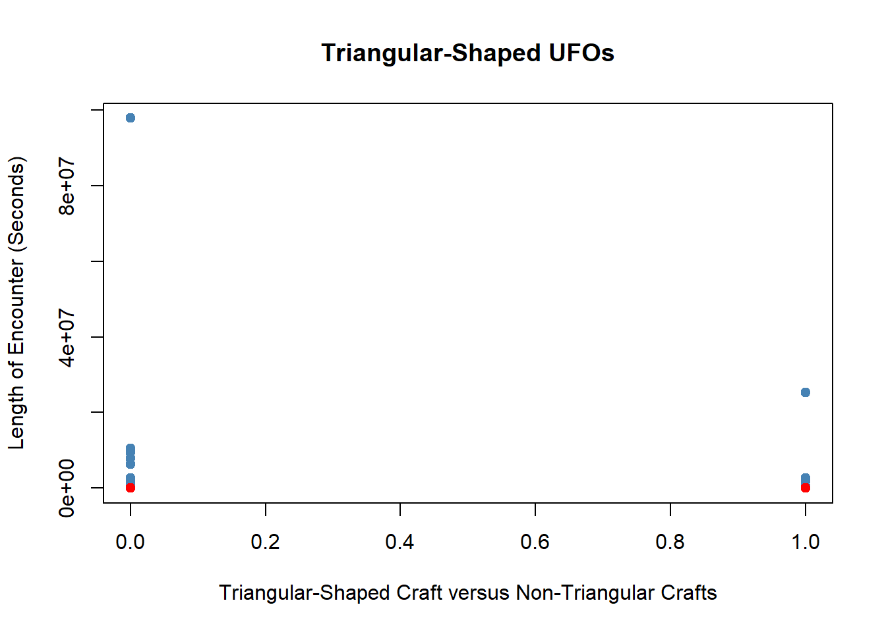
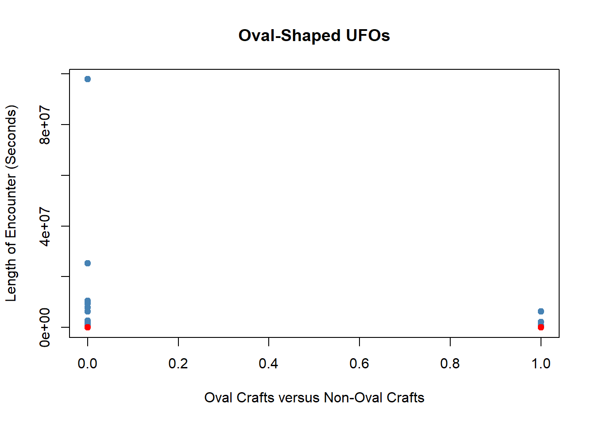
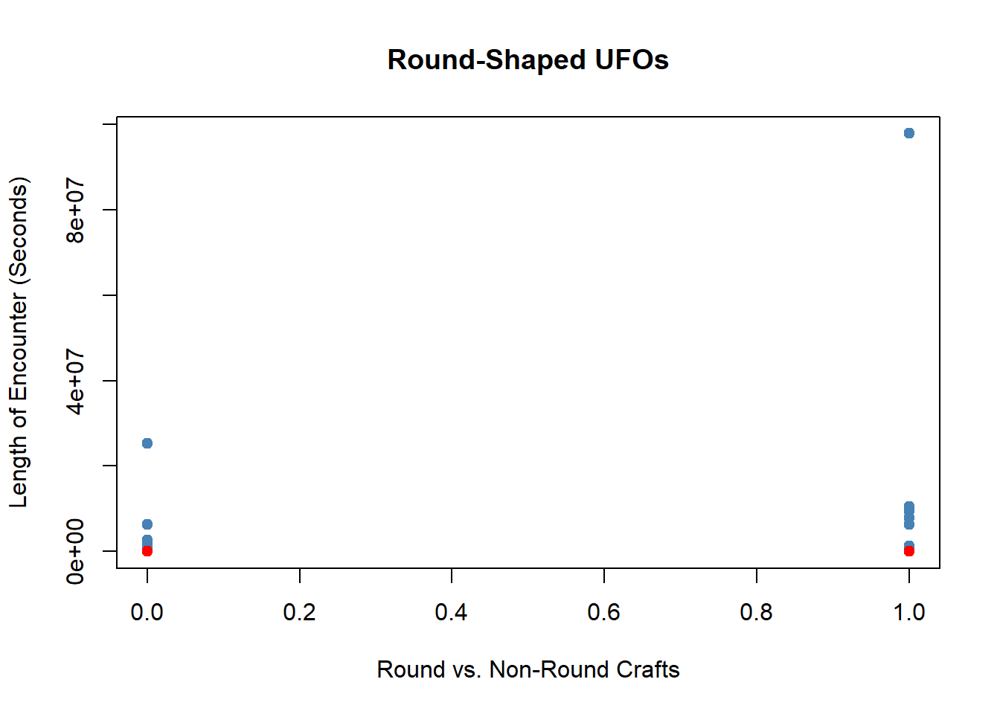

Since I’m looking into UFO shapes, and there are a lot of individual shapes, I opted to first remove “shapes” that aren’t literally shapes (including descriptions like “flash” or “formation” or “changing” as well as the super-specific shape of “light”). Then I collapsed the remaining UFO shape descriptions into 5 categories: Triangular, Cylindrical, Oval, Round (more properly circular than oval), and Parallelograms.
Probability Distributions of Encounter Length
Code
# Plot the probability & CDF for variablesprobability <- ufo_sighting_data$length_of_encounter_secondsplot(probability,xlab ="Length of UFO Encounter in Seconds",main ="Probability",col ="navyblue", cex =0.8)

Code
cum_probability <-cumsum(probability)plot(cum_probability,xlab ="Length of UFO Encounter in Seconds",ylab ="Cumulative Probability",main ="Cumulative Probability Distribution",col ="red",cex =0.8)

Grouping Data by Shape Category
Code
# Group data by the 2 variables of interest. Get mean & STDEV for at least 1 variable and print resultsround <-c("disk", "round", "sphere", "circle", "dome")triangular <-c("triangle", "cone", "pyramid", "delta", "chevron")oval <-c("oval", "teardrop", "egg", "crescent")parallelogram <-c("cross", "diamond", "hexagon", "rectangle")cylinder <-c("cylinder", "cigar")avgs <- ufo_sighting_data %>%group_by(Shape_Category) %>%summarize(mean(length_of_encounter_seconds),sd(length_of_encounter_seconds),n())colnames(avgs) <-c("Shape", "mean_seconds", "sd_seconds", "n_seconds")print(avgs)
# Generate a plot library(ggplot2)ggplot(avgs, aes(as.factor(Shape), mean_seconds, fill = Shape)) +geom_bar(stat ="identity") +labs(y ="Average encounter length (seconds)", x ="UFO Shape Category", title="Mean length of UFO encounter by Craft Shape") +scale_fill_manual(values =c("darkred", "darkorange2", "darkgreen", "darkcyan", "darkorchid4"))

As my independent variable is nominal, I figured a bar chart would be the best way to show how the mean encounter length varies for each of the 5 shape categories. This visualization suggests that people have spent the most time encountering round-shaped UFOs, but later data visualizations will show that the round UFO category has a notable outlier. After round UFOs, triangular and oval-shaped crafts have the highest average encounter length. I’ll focus on those 3 shape categories rather than all 5.
Regression with Dummy Variables
Code
# Carry out simple regression analysis using lm(). Generate plot that regresses X variable on Y. Fit a line through observations. # Create dummy variables for categorical Shape (x) variablelibrary(fastDummies)
Warning: package 'fastDummies' was built under R version 4.2.3
Thank you for using fastDummies!
To acknowledge our work, please cite the package:
Kaplan, J. & Schlegel, B. (2023). fastDummies: Fast Creation of Dummy (Binary) Columns and Rows from Categorical Variables. Version 1.7.1. URL: https://github.com/jacobkap/fastDummies, https://jacobkap.github.io/fastDummies/.
# Plot distribution for Triangular craftsTri_mean <-mean(ufo_sighting_data$length_of_encounter_seconds[ufo_sighting_data$Shape_Category_Triangular ==1])Ntri_mean <-mean(ufo_sighting_data$length_of_encounter_seconds[ufo_sighting_data$Shape_Category_Triangular ==0])plot(length_of_encounter_seconds ~ Shape_Category_Triangular, ufo_sighting_data, pch=19, col="steelblue", main="Triangular-Shaped UFOs", ylab="Length of Encounter (Seconds)",xlab="Triangular-Shaped Craft versus Non-Triangular Crafts")points(y = Tri_mean, x=1, col="red", pch=19) points(y = Ntri_mean, x=0, col="red", pch=19)

Plot for Oval UFOs
Code
# Plot distribution for Oval craftsOval_mean <-mean(ufo_sighting_data$length_of_encounter_seconds[ufo_sighting_data$Shape_Category_Oval ==1])Nov_mean <-mean(ufo_sighting_data$length_of_encounter_seconds[ufo_sighting_data$Shape_Category_Oval ==0])plot(length_of_encounter_seconds ~ Shape_Category_Oval, ufo_sighting_data, pch=19, col="steelblue", main="Oval-Shaped UFOs", xlab="Oval Crafts versus Non-Oval Crafts",ylab="Length of Encounter (Seconds)")points(y = Oval_mean, x=1, col="red", pch=19)points(y = Nov_mean, x=0, col="red", pch=19)

Code
# Plot distribution for Round craftsRo_mean <-mean(ufo_sighting_data$length_of_encounter_seconds[ufo_sighting_data$Shape_Category_Round ==1])Nro_mean <-mean(ufo_sighting_data$length_of_encounter_seconds[ufo_sighting_data$Shape_Category_Round ==0])plot(length_of_encounter_seconds ~ Shape_Category_Round, ufo_sighting_data, pch=19, col="steelblue",main="Round-Shaped UFOs",ylab="Length of Encounter (Seconds)",xlab="Round vs. Non-Round Crafts")points(y = Ro_mean, x=1, col="red", pch=19)points(y = Nro_mean, x=0, col="red", pch=19)

This plot allows us to see the outlier point in the round shape category that may influence the relatively high value of its mean when compared to the other shape categories.
Source Code
---title: "UFO Shapes & Length of Encounters: Descriptive Analysis"author: "Peri (Teresa) Lardo"desription: "Descriptive analysis of UFO sightings data set"date: "`r Sys.Date()`"format: html: toc: true code-fold: true code-copy: true code-tools: truecategories: - Project1 - Peri Teresa Lardo - UFO sightings---## Load libraries and dataset, clean data```{r}#| label: setup#| warning: false#Load libraries and import datalibrary(tidyverse)library(readr)library(dplyr)knitr::opts_chunk$set(echo =TRUE)# Create shape categories for personal sanityround <-c("disk", "round", "sphere", "circle", "dome")triangular <-c("triangle", "cone", "pyramid", "delta", "chevron")oval <-c("oval", "teardrop", "egg", "crescent")parallelogram <-c("cross", "diamond", "hexagon", "rectangle")cylinder <-c("cylinder", "cigar")ufo_sighting_data <-read_csv("data/ufo_sighting_data.csv") %>%drop_na(UFO_shape, length_of_encounter_seconds) %>%filter(!UFO_shape %in%c("light", "fireball", "flare", "flash", "other", "unknown", "formation", "changing", "changed")) %>%mutate(Shape_Category =case_when( UFO_shape %in% round ~"Round", UFO_shape %in% triangular ~"Triangular", UFO_shape %in% oval ~"Oval", UFO_shape %in% parallelogram ~"Parallelogram", UFO_shape %in% cylinder ~"Cylinder"))```Since I'm looking into UFO shapes, and there are a lot of individual shapes, I opted to first remove "shapes" that aren't literally shapes (including descriptions like "flash" or "formation" or "changing" as well as the super-specific shape of "light"). Then I collapsed the remaining UFO shape descriptions into 5 categories: Triangular, Cylindrical, Oval, Round (more properly circular than oval), and Parallelograms.## Probability Distributions of Encounter Length```{r}# Plot the probability & CDF for variablesprobability <- ufo_sighting_data$length_of_encounter_secondsplot(probability,xlab ="Length of UFO Encounter in Seconds",main ="Probability",col ="navyblue", cex =0.8)``````{r}cum_probability <-cumsum(probability)plot(cum_probability,xlab ="Length of UFO Encounter in Seconds",ylab ="Cumulative Probability",main ="Cumulative Probability Distribution",col ="red",cex =0.8)```## Grouping Data by Shape Category```{r}# Group data by the 2 variables of interest. Get mean & STDEV for at least 1 variable and print resultsround <-c("disk", "round", "sphere", "circle", "dome")triangular <-c("triangle", "cone", "pyramid", "delta", "chevron")oval <-c("oval", "teardrop", "egg", "crescent")parallelogram <-c("cross", "diamond", "hexagon", "rectangle")cylinder <-c("cylinder", "cigar")avgs <- ufo_sighting_data %>%group_by(Shape_Category) %>%summarize(mean(length_of_encounter_seconds),sd(length_of_encounter_seconds),n())colnames(avgs) <-c("Shape", "mean_seconds", "sd_seconds", "n_seconds")print(avgs)```## Split Variables```{r}# Split your variablescylindrical_UFOS <- avgs %>% dplyr::filter(Shape =="Cylinder")oval_UFOS <- avgs %>% dplyr::filter(Shape =="Oval")parallelogram_UFOS <- avgs %>% dplyr::filter(Shape =="Parallelogram")round_UFOS <- avgs %>% dplyr::filter(Shape =="Round")triangular_UFOs <- avgs %>% dplyr::filter(Shape =="Triangular")``````{r}# Rename columns according to the splits you made; Obtain difference in means, standard errors, and confidence intervalscolnames(cylindrical_UFOS) <-c("Shape", "Y_bar_cy", "sd_cy", "n_cy") colnames(oval_UFOS) <-c("Shape", "Y_bar_ov", "sd_ov", "n_ov")colnames(parallelogram_UFOS) <-c("Shape", "Y_bar_pa", "sd_pa", "n_pa")colnames(round_UFOS) <-c("Shape", "Y_bar_ro", "sd_ro", "n_ro")colnames(triangular_UFOs) <-c("Shape", "Y_bar_tr", "sd_tr", "n_tr")```## Estimate Mean Differences, Standard Errors & CIs for Triangular v. Round UFOs```{r}# Gaps for Triangular versus Round UFOsgap_tro <- triangular_UFOs$Y_bar_tr - round_UFOS$Y_bar_rogap_tro_se <-sqrt((triangular_UFOs$sd_tr ^2/ triangular_UFOs$n_tr) + (round_UFOS$sd_ro ^2/ round_UFOS$n_ro))gap_tro_ci_low <- gap_tro -1.96* gap_tro_segap_tro_ci_up <- gap_tro +1.96* gap_tro_seresult_tro <-cbind(triangular_UFOs[,-1], round_UFOS[,-(1:2)], gap_tro, gap_tro_se, gap_tro_ci_low, gap_tro_ci_up)print(result_tro, digits =3)```## Estimate Mean Differences, Standard Errors & CIs for Triangular v. Oval UFOs```{r}# Gaps for Triangular versus Oval UFOsgap_trov <- triangular_UFOs$Y_bar_tr - oval_UFOS$Y_bar_ovgap_trov_se <-sqrt((triangular_UFOs$sd_tr^2/ triangular_UFOs$n_tr) + (oval_UFOS$sd_ov^2/ oval_UFOS$n_ov))gap_trov_ci_low <- gap_trov -1.96* gap_trov_segap_trov_ci_up <- gap_trov +1.96* gap_trov_seresult_trov <-cbind(triangular_UFOs[,-1], oval_UFOS[,-(1:2)], gap_trov, gap_trov_se, gap_trov_ci_low, gap_trov_ci_up)print(result_trov, digits =3)```## Generate Visualization```{r}# Generate a plot library(ggplot2)ggplot(avgs, aes(as.factor(Shape), mean_seconds, fill = Shape)) +geom_bar(stat ="identity") +labs(y ="Average encounter length (seconds)", x ="UFO Shape Category", title="Mean length of UFO encounter by Craft Shape") +scale_fill_manual(values =c("darkred", "darkorange2", "darkgreen", "darkcyan", "darkorchid4"))```As my independent variable is nominal, I figured a bar chart would be the best way to show how the mean encounter length varies for each of the 5 shape categories. This visualization suggests that people have spent the most time encountering round-shaped UFOs, but later data visualizations will show that the round UFO category has a notable outlier. After round UFOs, triangular and oval-shaped crafts have the highest average encounter length. I'll focus on those 3 shape categories rather than all 5. ## Regression with Dummy Variables```{r}# Carry out simple regression analysis using lm(). Generate plot that regresses X variable on Y. Fit a line through observations. # Create dummy variables for categorical Shape (x) variablelibrary(fastDummies)ufo_sighting_data <-dummy_cols(ufo_sighting_data, select_columns ='Shape_Category')ufo_lm <-lm(length_of_encounter_seconds ~ Shape_Category, ufo_sighting_data)print(ufo_lm)```## Plot for Triangular UFOs```{r}# Plot distribution for Triangular craftsTri_mean <-mean(ufo_sighting_data$length_of_encounter_seconds[ufo_sighting_data$Shape_Category_Triangular ==1])Ntri_mean <-mean(ufo_sighting_data$length_of_encounter_seconds[ufo_sighting_data$Shape_Category_Triangular ==0])plot(length_of_encounter_seconds ~ Shape_Category_Triangular, ufo_sighting_data, pch=19, col="steelblue", main="Triangular-Shaped UFOs", ylab="Length of Encounter (Seconds)",xlab="Triangular-Shaped Craft versus Non-Triangular Crafts")points(y = Tri_mean, x=1, col="red", pch=19) points(y = Ntri_mean, x=0, col="red", pch=19)```## Plot for Oval UFOs```{r}# Plot distribution for Oval craftsOval_mean <-mean(ufo_sighting_data$length_of_encounter_seconds[ufo_sighting_data$Shape_Category_Oval ==1])Nov_mean <-mean(ufo_sighting_data$length_of_encounter_seconds[ufo_sighting_data$Shape_Category_Oval ==0])plot(length_of_encounter_seconds ~ Shape_Category_Oval, ufo_sighting_data, pch=19, col="steelblue", main="Oval-Shaped UFOs", xlab="Oval Crafts versus Non-Oval Crafts",ylab="Length of Encounter (Seconds)")points(y = Oval_mean, x=1, col="red", pch=19)points(y = Nov_mean, x=0, col="red", pch=19)``````{r}# Plot distribution for Round craftsRo_mean <-mean(ufo_sighting_data$length_of_encounter_seconds[ufo_sighting_data$Shape_Category_Round ==1])Nro_mean <-mean(ufo_sighting_data$length_of_encounter_seconds[ufo_sighting_data$Shape_Category_Round ==0])plot(length_of_encounter_seconds ~ Shape_Category_Round, ufo_sighting_data, pch=19, col="steelblue",main="Round-Shaped UFOs",ylab="Length of Encounter (Seconds)",xlab="Round vs. Non-Round Crafts")points(y = Ro_mean, x=1, col="red", pch=19)points(y = Nro_mean, x=0, col="red", pch=19)```This plot allows us to see the outlier point in the round shape category that may influence the relatively high value of its mean when compared to the other shape categories.